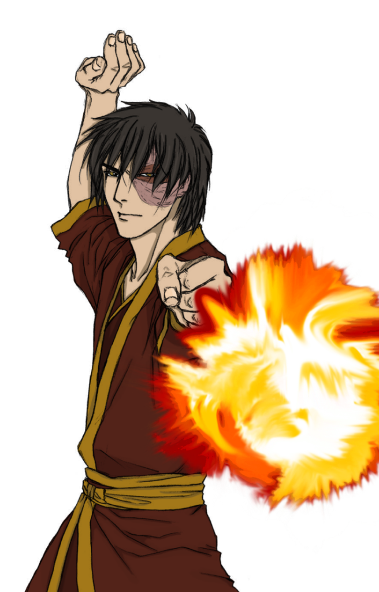
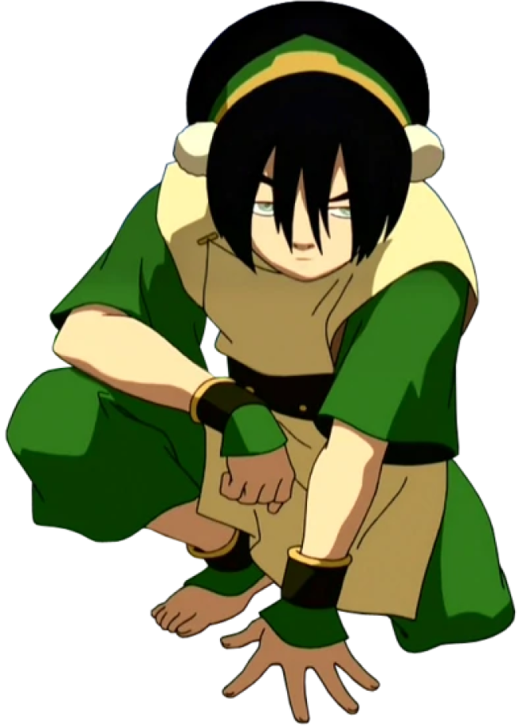
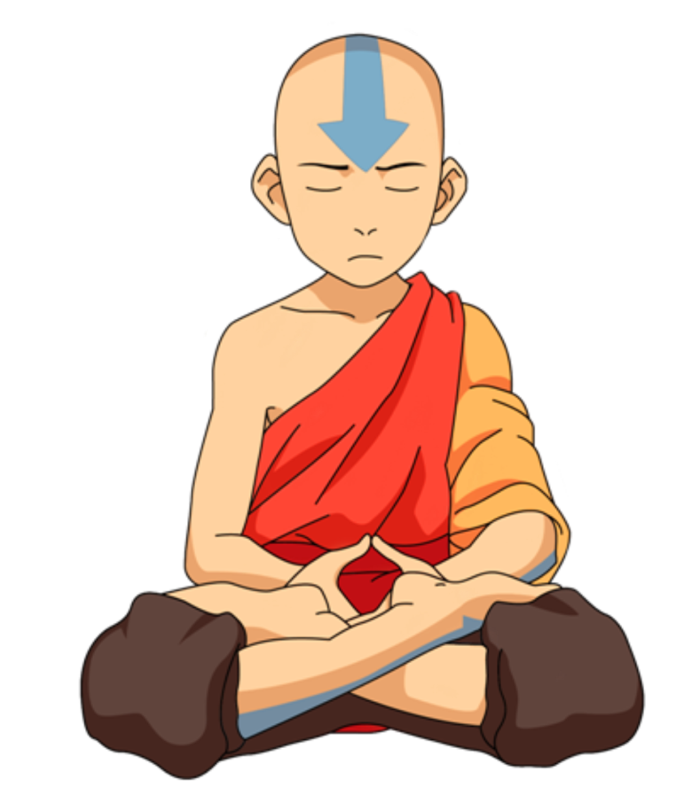

Personagens


Historia
Avatar: A Lenda de Aang se passa em um mundo criado a partir de referências culturais dos povos asiáticos. Neste mundo, a civilização é dividida entre quatro grandes nações: Tribos da Água, Reino da Terra, Nação do Fogo e Nômades do ar. Algumas pessoas, os chamados "dobradores", têm a habilidade de manipular um dos quatro elementos da natureza. E a cada geração, o Avatar, aquele capaz de dominar os quatro elementos, reincarna com a missão de manter a paz no planeta. No último século, a Nação do Fogo vem alcançando uma rápida industrialização e a expansão de suas riquezas, terras e poder. Tudo isso por meio de uma guerra mundial. A princípio, a dominação do Fogo foi impedida pelo Avatar Roku, nascido na própria Nação do Fogo. Após a morte de Roku, o Avatar reencarnou no dominador de ar Aang. Em meio à ameaça bélica do Senhor do Fogo, Aang acabou descobrindo ser o Avatar ainda muito jovem, quanto tinha apenas 12 anos. Imaturo e sem saber lidar com a responsabilidade, ele fugiu com medo do que seu destino traria. Em sua fuga, Aang acaba entrando acidentalmente no Estado de Avatar e se coloca em animação suspensa. Apenas após 100 anos, ele é encontrado pelos jovens irmãos Sokka e Katara, da Tribo da Água. Ao despertar, Aang descobre a destruição causada pela Nação do Fogo desde que o Avatar desapareceu, incluindo a destruição completa dos Nômades do Ar. Por esse motivo, ele aceita sua missão, cercado de culpa, e se dedica a aprender a dobra dos quatro elementos com a ajuda de seus novos amigos. Enquanto treinam, eles viajam tentando ajudar as comunidades pelas quais passam a se libertarem do domínio da Nação do Fogo.
Zuko pode não ser o protagonista, mas se tornou um dos personagens mais populares de Avatar: A Lenda de Aang. Introduzido como o principal antagonista, o personagem passa por uma longa jornada que permite a ele se conhecer e se melhorar, fazendo com que ele repense suas atitudes e tudo aquilo que aprendeu em sua nação. Sua redenção é considerada uma das mais bem feitas até hoje, garantindo que toda a história do príncipe exilado fosse bem construída e cheia de significado.


Katara é uma das principais personagens de Avatar Alenda de Aang desde o princípio da série, tendo papel fundamental na jornada do protagonista. Apesar disso, sua história se desenvolve para além de Aang, e ao longo das temporadas e material extra sobre a animação, fica claro que a dobradora de água cresce muito durante a história.
Toph Beifong, também conhecida como Toph, é uma mestre de Dobra de Terra, uma das mais poderosas de seu tempo, e a descobridora da Dobra de Metal. Cega desde o nascimento, Toph foi tratada constantemente de maneira condescendente por causa de sua inabilidade, particularmente por seus pais ultra protetores, Lao e Poppy Beifong. Ao descobrir Toupeiras Texugo, animais que dominavam a Terra e que também eram cegos, ela aprendeu a usar a dobra de terra como uma extensão de seus sentidos. Isso lhe deu a habilidade de "ver" todas as vibrações que passam pelo chão.

Aang foi um Nômade de ar nascido em 12 Agosto e o Avatar durante o conflito conhecido como Guerra de Cem Anos. Seu antecessor imediato foi o Avatar Roku, e sua sucessora foi a Avatar Korra. Como o Avatar de seu tempo, foi o único capaz de realizar a dobra dos quatro elementos. Ele também foi um dos poucos Avatares, e o primeiro em vários ciclos, a aprender a antiga arte da Dobra de Energia, e o primeiro Avatar a utilizar a técnica
